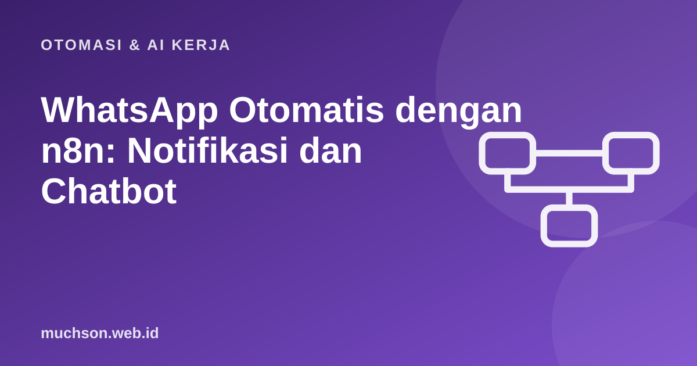

Beranda › Artikel › Otomasi & AI Kerja
Otomasi & AI KerjaWhatsApp Otomatis dengan n8n: Notifikasi dan Chatbot
Pelanggan Indonesia hidup di WhatsApp. Mengirim konfirmasi pesanan, pengingat kelas, atau menjawab pertanyaan umum secara otomatis sangat berharga, tetapi WhatsApp punya aturan ketat tentang siapa yang boleh dikirimi pesan dan kapan. Mengabaikan aturan itu membuat nomor Anda diblokir. Artikel ini menjelaskan jalur resmi dan cara merancang alurnya.
Sebaiknya sudah paham: webhook n8n, akun Meta Business

Setelah membaca dan mencoba materi ini, Anda mampu:
- membedakan WhatsApp Business App, Cloud API, dan cara tidak resmi
- memahami template pesan, jendela layanan 24 jam, dan opt-in
- menerima pesan masuk lewat webhook dan merutekannya
- membuat chatbot perintah sederhana dengan handoff ke manusia
- mengenali risiko kebijakan dan privasi
n8n adalah alat visual; alur kerjanya dibuat di editor n8n, bukan di halaman ini. Contoh kode JavaScript di bawah meniru logika node Code dan dijalankan sungguhan dengan Node.js agar hasilnya dapat dibuktikan. Antarmuka dan nama node dapat berubah antar versi, jadi cocokkan dengan dokumentasi n8n.
Gunakan jalur resmi: WhatsApp Business Platform (Cloud API) dari Meta, langsung atau lewat penyedia resmi. Pustaka tidak resmi yang mengendalikan WhatsApp Web melanggar ketentuan layanan dan nomor dapat diblokir permanen. Harga, kategori percakapan, dan aturan berubah; baca dokumentasi Meta terbaru.
Jalur yang tersedia
| Jalur | Cocok untuk | Catatan |
|---|---|---|
| WhatsApp Business App | Usaha kecil, balas manual | Gratis; pesan otomatis terbatas (salam, jawaban cepat) |
| WhatsApp Cloud API (Meta) | Otomasi, notifikasi, chatbot | Perlu akun Meta Business, nomor, verifikasi; berbayar per percakapan/pesan sesuai kategori |
| Penyedia resmi (BSP) | Butuh dukungan, kotak masuk tim | Biaya tambahan; mengelola API untuk Anda |
| Pustaka tidak resmi | Tidak disarankan | Melanggar ketentuan; risiko blokir |
Aturan inti
- Opt-in: kirim hanya ke orang yang setuju dihubungi lewat WhatsApp (catat kapan dan dari mana).
- Jendela layanan 24 jam: setelah pengguna mengirim pesan, Anda boleh membalas bebas selama 24 jam.
- Di luar 24 jam: hanya pesan template yang sudah disetujui Meta (utilitas seperti konfirmasi pesanan, otentikasi, pemasaran).
- Template dengan variabel: "Halo {{1}}, pesanan {{2}} sudah dikirim."; diajukan dan ditinjau lebih dulu.
- Opt-out: sediakan cara berhenti (balas BERHENTI) dan patuhi segera.
- Pemasaran dikenai batas dan biaya lebih tinggi; kualitas rendah (banyak laporan/blokir) menurunkan batas kirim.
Mengirim notifikasi
# Cloud API: kirim pesan template (n8n: node HTTP Request atau node WhatsApp Business Cloud)
curl -X POST "https://graph.facebook.com/v21.0/<PHONE_NUMBER_ID>/messages" \
-H "Authorization: Bearer <TOKEN>" -H "Content-Type: application/json" \
-d '{
"messaging_product": "whatsapp",
"to": "6281234567890",
"type": "template",
"template": {
"name": "konfirmasi_pesanan",
"language": { "code": "id" },
"components": [{ "type": "body", "parameters": [
{ "type": "text", "text": "Ani" }, { "type": "text", "text": "A1042" } ] }]
}
}'Menerima pesan masuk
Meta mengirim pesan masuk ke webhook n8n Anda (daftarkan URL produksi dan token verifikasi di dasbor aplikasi Meta). Anda lalu merutekan isi pesan ke jawaban yang tepat. Peragaan logika routing dan jendela 24 jam:
const JAM24 = 24 * 3600 * 1000;
function normalisasiNomor(n) {
const d = String(n).replace(/[^\d]/g, '');
return d.startsWith('0') ? '62' + d.slice(1) : d;
}
function rute(teks) {
const t = teks.trim().toLowerCase();
if (/^(halo|hai|menu|bantuan)\b/.test(t)) return { jawab: 'Halo! Ketik: HARGA, JADWAL, STATUS <no-pesanan>, atau ADMIN untuk bicara dengan staf.' };
if (t === 'harga') return { jawab: 'Kursus React Dasar: Rp750.000. Kursus Flutter: Rp900.000.' };
if (t === 'jadwal') return { jawab: 'Kelas dimulai setiap awal bulan. Balas DAFTAR untuk mendaftar.' };
const m = t.match(/^status\s+([a-z0-9-]+)$/);
if (m) return { jawab: `Mencari pesanan ${m[1].toUpperCase()}...`, aksi: 'cariPesanan', arg: m[1] };
if (t === 'admin') return { aksi: 'handoff', jawab: 'Baik, staf kami akan segera membalas.' };
if (t === 'berhenti') return { aksi: 'optout', jawab: 'Anda tidak akan menerima pesan lagi. Terima kasih.' };
return { jawab: 'Maaf, saya belum paham. Ketik MENU untuk melihat pilihan.' };
}
function bolehBalasBebas(waktuPesanTerakhirPengguna, sekarang) {
return sekarang - waktuPesanTerakhirPengguna <= JAM24; // di luar itu wajib template
}
const sekarang = Date.parse('2026-10-30T10:00:00Z');
console.log(normalisasiNomor('0812-3456-7890'), normalisasiNomor('+62 813 9999 0000'));
for (const p of ['Halo', 'harga', 'status a1042', 'ADMIN', 'blablabla', 'berhenti']) {
console.log(p.padEnd(14), '->', JSON.stringify(rute(p)));
}
console.log('bebas dibalas (2 jam lalu) :', bolehBalasBebas(sekarang - 2 * 3600e3, sekarang));
console.log('bebas dibalas (30 jam lalu) :', bolehBalasBebas(sekarang - 30 * 3600e3, sekarang));6281234567890 6281399990000
Halo -> {"jawab":"Halo! Ketik: HARGA, JADWAL, STATUS <no-pesanan>, atau ADMIN untuk bicara dengan staf."}
harga -> {"jawab":"Kursus React Dasar: Rp750.000. Kursus Flutter: Rp900.000."}
status a1042 -> {"jawab":"Mencari pesanan A1042...","aksi":"cariPesanan","arg":"a1042"}
ADMIN -> {"aksi":"handoff","jawab":"Baik, staf kami akan segera membalas."}
blablabla -> {"jawab":"Maaf, saya belum paham. Ketik MENU untuk melihat pilihan."}
berhenti -> {"aksi":"optout","jawab":"Anda tidak akan menerima pesan lagi. Terima kasih."}
bebas dibalas (2 jam lalu) : true
bebas dibalas (30 jam lalu) : falseMenambahkan AI
- Untuk pertanyaan bebas, panggil model bahasa (node AI Agent) dengan konteks FAQ/produk Anda; batasi agar hanya menjawab dari dasar pengetahuan Anda.
- Selalu sediakan handoff ke manusia dan jangan biarkan AI membuat janji (harga, jadwal) di luar data yang diberikan.
- Beri tahu pengguna bahwa mereka berbicara dengan asisten otomatis.
- Catat dan tinjau percakapan untuk memperbaiki jawaban; hindari mengirim data pribadi sensitif ke model tanpa kebutuhan.
Privasi dan etika
- Nomor ponsel adalah data pribadi; patuhi UU Pelindungan Data Pribadi: tujuan jelas, persetujuan, keamanan, dan hak hapus.
- Jangan membeli daftar nomor atau mengirim pesan massal tanpa persetujuan.
- Simpan token di credential n8n; batasi siapa yang dapat melihat riwayat eksekusi karena memuat isi pesan.
1. Ubah nomor 0813-1111-2222 menjadi format Cloud API.
2. Pesan konfirmasi pesanan dikirim 3 hari setelah pelanggan terakhir membalas. Boleh bebas?
3. Tambahkan perintah "ALAMAT" ke router.
4. Apa risiko mengirim pemasaran ke daftar tanpa opt-in?
- Gunakan WhatsApp Business Cloud API resmi, bukan cara tidak resmi.
- Jendela 24 jam untuk balasan bebas; di luarnya pakai template yang disetujui; wajib opt-in dan opt-out.
- Webhook masuk → rutekan → balas; handoff ke manusia selalu tersedia.
- AI boleh membantu bila dibatasi pada data Anda; jaga privasi dan kebijakan.
Tanya jawab
Berapa biaya WhatsApp API?
Bisa memakai nomor yang sudah dipakai di aplikasi biasa?
Alternatif WhatsApp?
Referensi
- WhatsApp Business Platform
- WhatsApp: Message templates
- n8n: WhatsApp Business Cloud node
- UU No. 27 Tahun 2022 tentang Pelindungan Data Pribadi